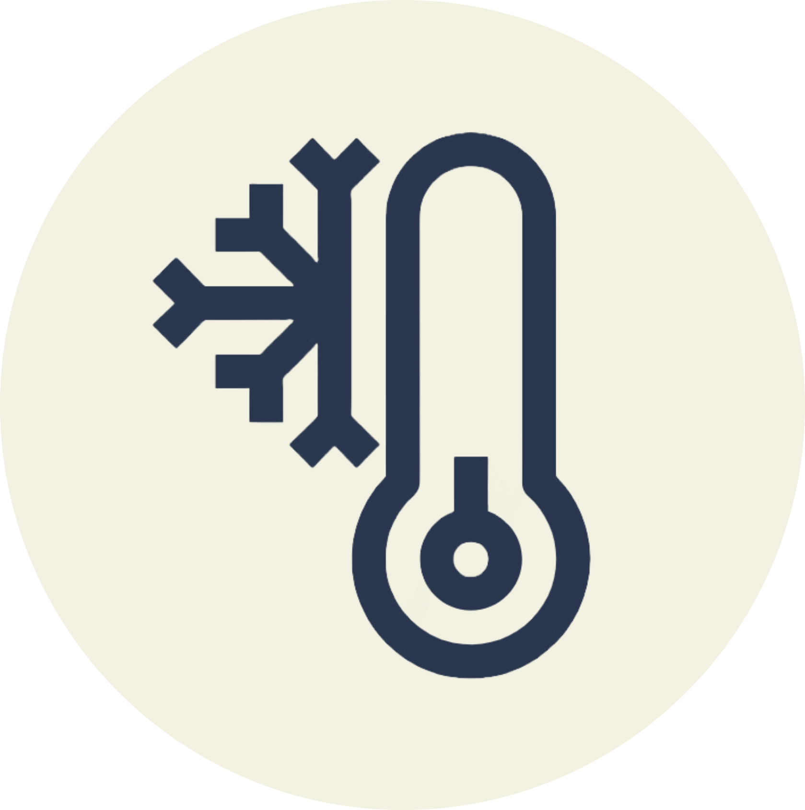

Modo calor
Este modo es recomendado para cuando la temperatura se encuentra por debajo de 19°C. Se encargará de mantener el ambiente cálido.

Modo frío
Este modo es recomendado para cuando la temperatura se encuentra por encima de 25°C. Se encargará de mantener el ambiente fresco.

Modo ventilador
Este modo es recomendado para cuando se quiere que el aire del ambiente circule eficazmente.
Modo automatico
Este modo es recomendado para cuando la temperatura se desea mantener la temperatura ideal en el rango de 20°C- 24°C.